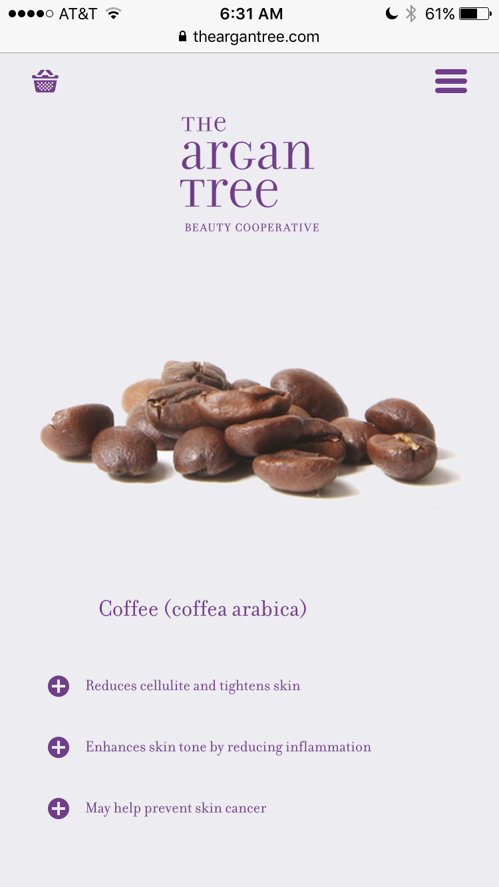
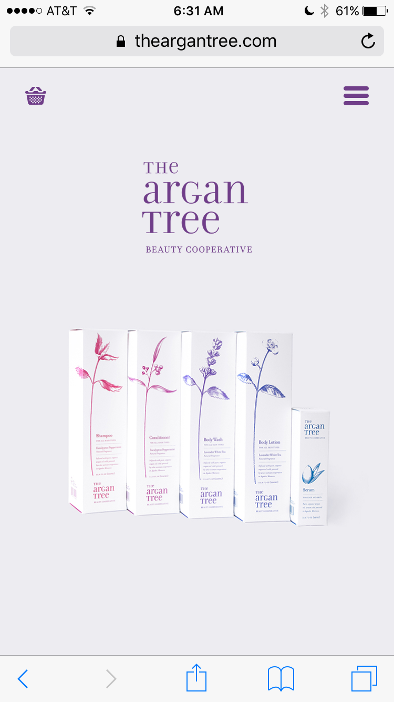
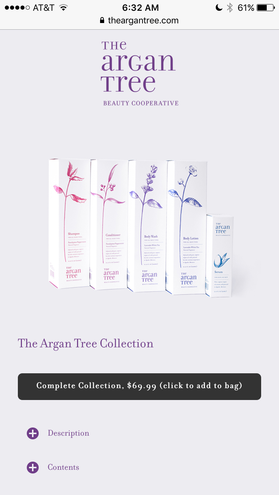
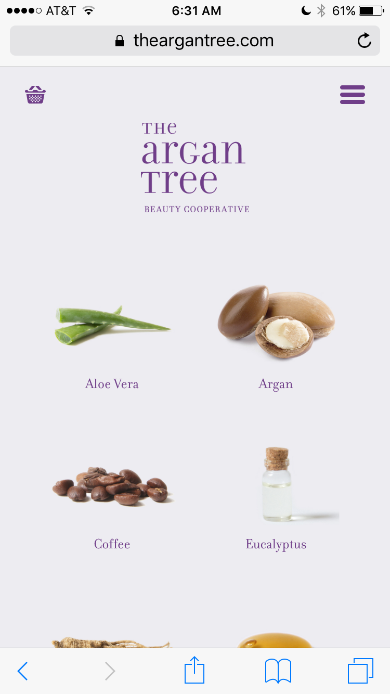

The Argan Tree is a beauty cooperative improving the lives of more than 60 women throughout Southwest Morocco.
The Argan Tree combines the sentiments of beauty and sustainability to create its brand. This is seen as soon as a visitor heads over to the main site, where they are welcomed by a gorgeously designed collection of bottles, along with a UI that doesn’t scream “Here’s 30% off, BUY SOMETHING.” This ethereal feel is primarily due to the amount of spacing between all aspects of the site, as well as on internal pages themselves. The primary challenge would be to utilize the limited real-estate on a mobile device to continue The Argan Tree’s core tenets of sustainability and beauty.
As a beauty cooperative, we want to be as transparent as possible, especially when you're putting this stuff into your body on a daily basis. Therefore, we have an information packed ingredients page on our desktop site. Here was an early idea I had about how to keep the consistency of transparency on our mobile site:
By using Twitter Bootstrap, PHP, HTMl5, and CSS3, we were able to churn out a mobile site in about 2 days. Although the hamburger menu has went under much scrutiny by the design community, we felt it was a great navigation tool in order to maintain our brand. By putting all of the additional information (ingredients, blog, etc) in the menu bar, the first time user experience consists of a beautiful collection, that a user can buy with their first click upon visiting the site.
   